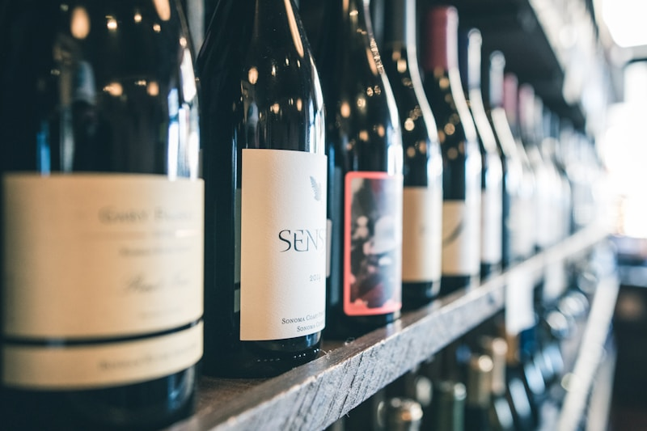

À la une
À la une
Bordeaux 2018 : un millésime d'exception
Climat, dégustation, garde et conservation : notre guide complet.
Lire l'articleBlog
Guides, dégustation et portraits, par nos sommeliers.
À la une
Climat, dégustation, garde et conservation : notre guide complet.
Lire l'articleEn vidéo
Bordeaux, Bourgogne : la forme change-t-elle le vin ? Un expert répond (sous-titres en anglais).
Tous nos articles
 Éducation
Éducation
Des premières amphores d'Arménie à aujourd'hui : l'histoire du vin et ses critères de qualité.
Lire la suite →
Guide
Rouge, blanc, rosé, dessert, mousseux : les caractéristiques, accords et températures de chaque type.
Lire la suite → Santé
Santé
Resvératrol, antioxydants, coeur : les 10 bienfaits du vin rouge consommé avec modération.
Lire la suite → Guide Local
Guide Local
Notre sélection des meilleures adresses pour acheter vins et spiritueux à Lomé.
Lire la suite →
MixologieCinq recettes faciles avec les ingrédients exacts et les étapes, sans être bartender.
Lire la suite →